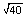
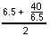
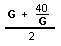
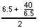
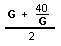
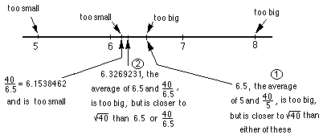

What does mean? We're looking for a number such that when you multiply it by itself you get 40 or
Finding the Square root of a number by 'iteration of the average method'/Chapter10
Finding by
'iteration of the average' method.
What does mean? We're looking for a number such that
when you multiply it by itself you get 40 or  . Suppose we guess 5. 40/5 = 8. 8x5=40, but
the two factors have to be the same. 8 is too big
and 5 is too small. If we find their average, we'll be closer to the
. So we'll do
this
. Suppose we guess 5. 40/5 = 8. 8x5=40, but
the two factors have to be the same. 8 is too big
and 5 is too small. If we find their average, we'll be closer to the
. So we'll do
this = 6.5. Then we'll take 6.5 and find
the average of this and 40/6.5, like this . Notice we have an iteration
problem now where G is the guess number  ->
G! Here's a number line picture of these first 2 iterations:
= 6.5. Then we'll take 6.5 and find
the average of this and 40/6.5, like this . Notice we have an iteration
problem now where G is the guess number  ->
G! Here's a number line picture of these first 2 iterations:

So we get an infinite sequence 5, 6.5, 6.326923077, 6.324555763,
6.324555320, ... After only 4 iterations we get the correct to 9 decimal places. This
method gives a rapidly converging sequence to find the square root of a
number.
Using Mathematica where x is the guess number
h[x_]=(40/x+x)/2
1/2 (40/x+x)
N[NestList[h,5,10],10]
{5.000000000,6.500000000,6.326923077,6.324555763,6.324555320,6.324555320,6.324555320,6.324555320,6.324555320,6.324555320,6.324555320}
ListLinePlot[%]
(the y-axis does have decimal points in the numbers)
Write a program to do this iteration.
Finding the square root of N by the
iteration of the averaging method.
Gayla, a 6th grader, wrote this
program to get the square root
of N , starting with G
See Maura's and other iteration solutions.